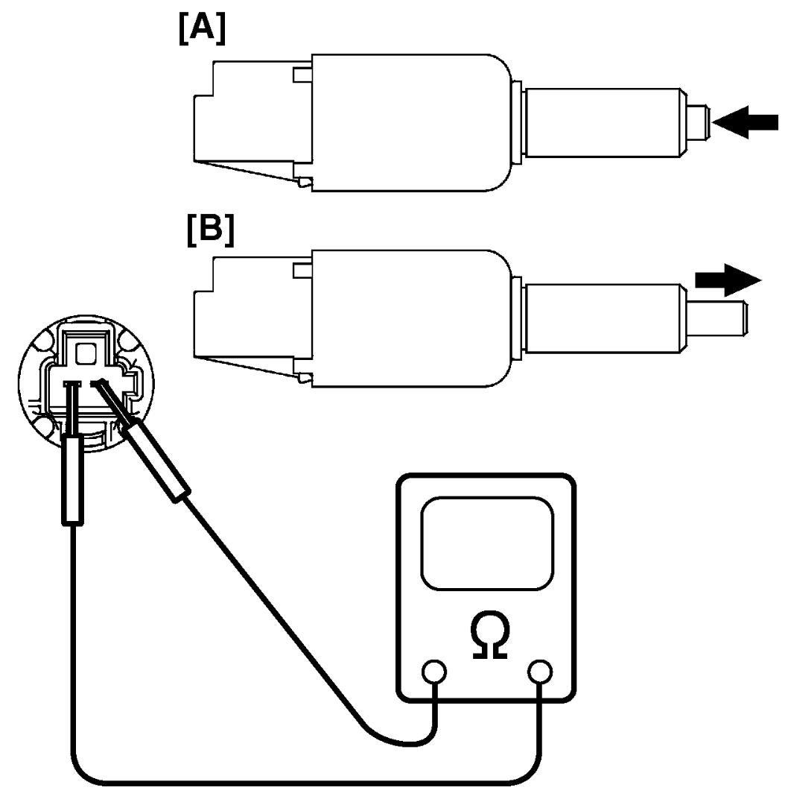
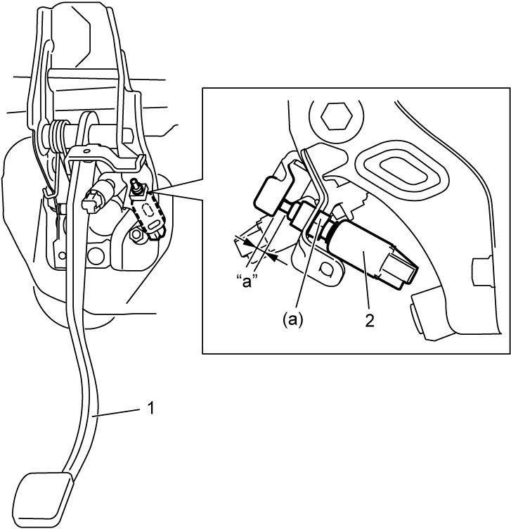

5C
| CPP No.1 Switch Inspection and Adjustment (If Equipped) |
Inspection
Measure resistance between terminals under each condition below. If check result is not as specified, replace switch.
CPP No.1 switch resistance
When switch shaft is pushed [A]: Continuity exists
When switch shaft is free [B]: No continuity

 "Expand image")
Adjustment
With clutch pedal (1) depressed, adjust switch (2) position so that clearance “a” between end of thread and clutch pedal arm is within specification. Then tighten lock nut to specified torque.
Clearance between end of thread and clutch pedal arm “a”
LHD model: 3.6 – 4.1 mm (0.142 – 0.161 in.)
RHD model: 4.3 – 4.8 mm (0.169 – 0.189 in.)

 "Expand image")